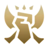

FIGHTERS
Fighters (also known as Bruisers) are a diverse group of short-ranged combatants who excel at both dealing and surviving damage. With easy access to heavy, continuous damage (or DPS) and a host of innate defenses, fighters thrive in extended fights as they seek out enemies to take down, but their limited range puts them at constant risk of being kept at bay (or kited) by their opponents via crowd control, range and mobility.
ASSASSIN
Slayers (formerly "Assassins") are fragile but agile damage-focused melee champions that look to swiftly take down their targets.
TANK
Tanks are tough melee champions who sacrifice damage in exchange for powerful crowd control. While able to engage enemies in combat, a tank's purpose isn't usually to kill opponents; rather, tanks excel at disrupting enemies and diverting focus to themselves, allowing them to lock down specific targets (or several targets at once), as well as remove (or peel) threats from their allies.

Hola
MAGE
Mages are champions who typically possess great reach, ability-based area of effect damage and crowd control, and who use all of these strengths in tandem with each other to trap and destroy enemies from a distance. Specializing in magic damage, often burst damage, and therefore investing heavily in items that allow them to cast stronger and faster spells.
SUPPORT
Within a drafted team, the Support is one of the two champions assigned to the bottom lane alongside the Bottom icon.png Bottom Carry. This role's initial goal is to assist their more vulnerable team mate through the earliest stages of the game, and is a position that suits champions with either utility, disengage or high base damage.
MARKSMEN
Marksmen are ranged champions whose power almost exclusively revolves around their basic attacks: using their reach to land massive continuous damage from a distance, marksmen are capable of taking down even the toughest of opponents when positioned behind the safety of their team, and excel at securing map objectives such as Dragon Dragon, Baron Nashor Baron Nashor and turrets.